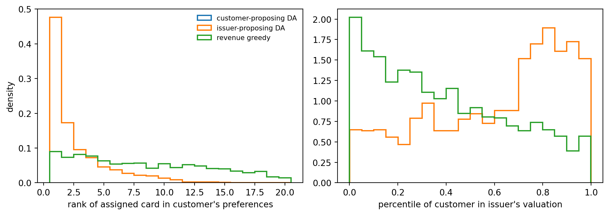

Stable matchings, issuer eligibility, learning to rank offers, and the trade-off between customer value and platform revenue
A credit card comparison platform sits between two groups that both have preferences. Customers want the card that fits how they spend: cash back or travel miles, no annual fee or a big sign-up bonus, a low rate if they carry a balance. Issuers want customers who will be approved, spend, and repay, and each issuer can only approve so many applications for a given product in a month. The platform earns a referral commission when a customer it sends is approved, and the commission differs from card to card. A platform that recommends whatever pays most will lose customers’ trust. A platform that ignores issuers’ preferences will send them applicants they decline, and lose the issuers.
This is a two-sided market (Rochet and Tirole, 2003), and the recommendation problem has two layers. The first is a matching question: which customer should be paired with which card when both sides have preferences and capacities are limited? Matching theory, built on the deferred acceptance algorithm of Gale and Shapley (1962), says what a “good” pairing is and how to compute it. The second is a ranking question: in practice the platform shows each customer a short ordered list, and the customer chooses. Learning to rank says how to order that list from logged choices. This chapter develops both and connects them through the constraint that ties them together, issuer eligibility.
236.1 The Pipeline
A card recommendation system typically runs four steps for each customer.
Eligibility filter (hard constraints). Remove cards the customer cannot get: the issuer’s minimum credit score and income, geography, existing relationships. Showing an ineligible card wastes the customer’s time and may trigger a hard credit inquiry that lowers their score.
Customer utility (soft preferences). Score each remaining card by how well it fits the customer: reward type, annual fee relative to tolerance, interest rate if the customer revolves, brand affinity.
Issuer and platform value. Estimate the expected commission, \(\text{commission}_j \times P(\text{choose}_j) \times P(\text{approve}_j)\), and, if the issuer shares it, the issuer’s own valuation of the customer.
Combine and rank. Order the eligible cards by a score that trades off the two sides, and show the top \(K\).
We first ask what an ideal pairing would look like if the platform could assign cards directly, then return to ranked lists.
Code
import numpy as npimport pandas as pdimport matplotlib.pyplot as pltrng = np.random.default_rng(1208)ISSUERS = ["Issuer A", "Issuer B", "Issuer C", "Issuer D", "Issuer E"]REWARDS = ["cashback", "miles", "points"]n_cards, n_cust =30, 2000cards = pd.DataFrame({"issuer": rng.choice(ISSUERS, n_cards),"reward": rng.choice(REWARDS, n_cards),"min_score": rng.integers(600, 751, n_cards),"annual_fee": rng.choice([0, 0, 29, 49, 95, 99, 199], n_cards),"apr": rng.uniform(15, 29, n_cards).round(1),"commission": rng.integers(50, 201, n_cards),})cards["min_income"] = np.where(cards.annual_fee >=95, 60_000, 25_000)cards["capacity"] = rng.integers(45, 90, n_cards) # approvals per month via the platformcust = pd.DataFrame({"score": rng.integers(600, 801, n_cust),"income": rng.lognormal(np.log(65_000), 0.45, n_cust).round(-2),"reward_pref": rng.choice(REWARDS, n_cust),"fee_tolerance": rng.choice([0, 50, 100, 200], n_cust, p=[0.4, 0.25, 0.2, 0.15]),"revolver": rng.random(n_cust) <0.35, # carries a balance"brand_pref": rng.choice(ISSUERS + ["none"], n_cust),})S = cust.score.to_numpy()[:, None]I = cust.income.to_numpy()[:, None]eligible = (S >= cards.min_score.to_numpy()) & (I >= cards.min_income.to_numpy())def utility_features(cust, cards):"""Pairwise features (customer x card x feature) that drive the customer's utility.""" rew = (cust.reward_pref.to_numpy()[:, None] == cards.reward.to_numpy()).astype(float) over_fee = np.maximum(cards.annual_fee.to_numpy() - cust.fee_tolerance.to_numpy()[:, None], 0) /100 apr_cost = cust.revolver.to_numpy()[:, None] * (cards.apr.to_numpy() -20) /5 brand = (cust.brand_pref.to_numpy()[:, None] == cards.issuer.to_numpy()).astype(float) perk = (cards.annual_fee.to_numpy() /100)[None, :].repeat(len(cust), 0) # fee buys perksreturn np.stack([rew, over_fee, apr_cost, brand, perk], axis=-1)BETA_TRUE = np.array([1.2, -1.5, -0.8, 0.7, 0.4])Phi = utility_features(cust, cards)U_true = Phi @ BETA_TRUE + rng.gumbel(0, 0.5, eligible.shape) # customer's utility# Issuer's valuation of a customer for a card: creditworthiness, spend, fit with the cardz_s, z_i = (S -700) /50, np.log(I /65_000) /0.45V_issuer =1.0* z_s +0.6* z_i +0.5* Phi[..., 0] + rng.normal(0, 1.0, eligible.shape)p_approve =1/ (1+ np.exp(-(1.5+0.06* (S - cards.min_score.to_numpy()))))print("eligible cards per customer, quartiles:", np.percentile(eligible.sum(1), [25, 50, 75]))print("customers with no eligible card:", int((eligible.sum(1) ==0).sum()))cards.head(8)
eligible cards per customer, quartiles: [11. 18. 24.]
customers with no eligible card: 29
issuer
reward
min_score
annual_fee
apr
commission
min_income
capacity
0
Issuer D
miles
621
199
25.1
88
60000
80
1
Issuer C
points
627
29
16.7
184
25000
70
2
Issuer C
cashback
670
199
15.6
160
60000
87
3
Issuer D
miles
625
99
27.9
179
60000
65
4
Issuer E
points
732
0
24.3
126
25000
64
5
Issuer E
miles
621
29
18.9
174
25000
69
6
Issuer A
points
647
99
24.0
163
60000
52
7
Issuer E
miles
603
49
25.0
103
25000
59
236.2 Stable Matching and Deferred Acceptance
236.2.1 Stability
Suppose each card \(j\) can accept at most \(q_j\) customers (its monthly approval budget through the platform), each customer takes at most one card, customer \(i\) ranks eligible cards by utility \(u_{ij}\), and issuer \(j\) ranks eligible customers by its valuation \(v_{ij}\). A matching \(\mu\) assigns each customer to at most one card and respects capacities. A customer and a card form a blocking pair if
that is, the customer prefers card \(j\) to their assignment, and the issuer either has a free slot or prefers this customer to one of the customers it holds. A matching with no blocking pairs is stable. Stability is the natural notion of a matching that “sticks”: in an unstable matching, some customer and issuer would both rather deal with each other directly than accept what the platform arranged, which is exactly how platforms lose their partners. Roth (1984) showed that the entry-level labor market for American physicians failed in the decades before a stable matching mechanism was adopted and has functioned since, a story that made stability the organizing principle of market design (Roth and Sotomayor, 1990).
236.2.2 Deferred acceptance
Gale and Shapley (1962) proved that a stable matching always exists and gave an algorithm to find it. In the customer-proposing version with capacities (their “college admissions” problem):
Every unmatched customer proposes to their most preferred card that has not yet rejected them.
Each card considers its current tentative holds together with the new proposals, keeps the best \(q_j\) by its own ranking, and rejects the rest.
Repeat until no customer has a card left to propose to or every customer is held.
Acceptance is deferred: a card’s hold is never final until the algorithm ends, so a card can always trade up. The algorithm terminates because each customer proposes to each card at most once, and the result is stable. It is also customer-optimal: among all stable matchings, every customer weakly prefers the one produced by customer-proposing deferred acceptance, and every issuer weakly prefers the one produced by issuer-proposing deferred acceptance. Proposing is also safe for the proposing side. Dubins and Freedman (1981) and Roth (1982) proved that no customer can gain by misreporting preferences in the customer-proposing mechanism, while no stable mechanism makes truth-telling safe for both sides at once.
Code
import heapqdef deferred_acceptance(U, V, E, cap):"""Customer-proposing deferred acceptance with capacities. U[i, j]: customer utility, V[i, j]: issuer valuation, E: eligibility, cap[j]: capacity.""" n, J = U.shape prefs = [list(np.argsort(-np.where(E[i], U[i], -np.inf))[: E[i].sum()]) for i inrange(n)] nxt = np.zeros(n, int) held = [[] for _ inrange(J)] # min-heaps of (issuer value, customer) free = [i for i inrange(n) if prefs[i]] match = np.full(n, -1)while free: i = free.pop()if nxt[i] >=len(prefs[i]):continue j = prefs[i][nxt[i]] nxt[i] +=1 heapq.heappush(held[j], (V[i, j], i)) match[i] = jiflen(held[j]) > cap[j]: _, out = heapq.heappop(held[j]) # card rejects its least valued holder match[out] =-1 free.append(out)return matchdef blocking_pairs(match, U, V, E, cap):"""Count customer-card pairs that block the matching, per @eq-1208-blocking.""" n, J = U.shape u_now = np.where(match >=0, U[np.arange(n), np.maximum(match, 0)], -np.inf) counts = np.bincount(match[match >=0], minlength=J) worst = np.full(J, -np.inf)for j inrange(J): held = np.flatnonzero(match == j)if counts[j] >= cap[j] andlen(held): worst[j] = V[held, j].min() issuer_ok = (counts < cap)[None, :] | (V > worst[None, :])returnint((E & (U > u_now[:, None]) & issuer_ok).sum())cap = cards.capacity.to_numpy()m_cust = deferred_acceptance(U_true, V_issuer, eligible, cap)# issuer-proposing DA with capacities: run with issuers as proposers by cloning card slotsslot_card = np.repeat(np.arange(n_cards), cap)m_slots = deferred_acceptance(V_issuer[:, slot_card].T, U_true[:, slot_card].T, eligible[:, slot_card].T, np.ones(n_cust, int))m_iss = np.full(n_cust, -1)m_iss[m_slots[m_slots >=0]] = slot_card[m_slots >=0]# A revenue-greedy platform: give each customer the highest-commission eligible card with roomm_rev = np.full(n_cust, -1)room = cap.copy()for i in rng.permutation(n_cust): opts = np.flatnonzero(eligible[i] & (room >0))iflen(opts): j = opts[np.argmax(cards.commission.to_numpy()[opts])] m_rev[i], room[j] = j, room[j] -1print("total capacity:", cap.sum(), " customers with an eligible card:", int((eligible.sum(1) >0).sum()))
total capacity: 1902 customers with an eligible card: 1971
Two implementation notes. A card with capacity \(q_j\) holds its proposals in a min-heap keyed by its valuation, so admitting a new proposal and rejecting the least valued holder costs \(O(\log q_j)\). For the issuer-proposing version we split each card into \(q_j\) unit-capacity “slots” with identical preferences, a standard reduction (Roth and Sotomayor, 1990, chapter 5), and let the slots propose.
Code
def customer_rank(match): r = []for i in np.flatnonzero(match >=0): order = np.argsort(-np.where(eligible[i], U_true[i], -np.inf)) r.append(int(np.flatnonzero(order == match[i])[0]) +1)return np.array(r)def issuer_percentile(match): out = []for i in np.flatnonzero(match >=0): j = match[i] pool = V_issuer[eligible[:, j], j] out.append((pool < V_issuer[i, j]).mean())return np.array(out)results = {"customer-proposing DA": m_cust, "issuer-proposing DA": m_iss, "revenue greedy": m_rev}fig, ax = plt.subplots(1, 2, figsize=(10, 3.6))for name, m in results.items(): cr = customer_rank(m) ax[0].hist(cr, bins=np.arange(1, 22) -0.5, histtype="step", density=True, label=name, lw=1.5) ax[1].hist(issuer_percentile(m), bins=20, histtype="step", density=True, label=name, lw=1.5)ax[0].set_xlabel("rank of assigned card in customer's preferences"); ax[0].set_ylabel("density")ax[1].set_xlabel("percentile of customer in issuer's valuation")ax[0].legend(frameon=False, fontsize=8)plt.tight_layout()plt.show()pd.DataFrame({name: {"matched customers": int((m >=0).sum()),"blocking pairs": blocking_pairs(m, U_true, V_issuer, eligible, cap),"mean customer rank": customer_rank(m).mean(),"mean issuer percentile": issuer_percentile(m).mean(),"expected commission": float(sum(cards.commission.iat[m[i]] * p_approve[i, m[i]]for i in np.flatnonzero(m >=0)))}for name, m in results.items()}).T.round(2)

(a) Who gains from each matching. Left: distribution of the rank, in the customer’s own preference order over eligible cards, of the card each matched customer receives. Right: the issuer-side counterpart, the percentile of each admitted customer in the issuer’s valuation of its eligible applicants. In this market the customer-proposing and issuer-proposing stable matchings coincide, so their curves overlap. The revenue-greedy assignment is unstable and much worse for customers.
matched customers
blocking pairs
mean customer rank
mean issuer percentile
expected commission
customer-proposing DA
1547.0
0.0
2.74
0.61
200267.54
issuer-proposing DA
1547.0
0.0
2.74
0.61
200267.54
revenue greedy
1792.0
18425.0
10.55
0.39
237940.56
(b)
Figure 236.1
Code
print("customers whose card differs between the two stable matchings:", int((m_cust != m_iss).sum()))# A small market with two stable matchings: preferences pull in opposite directionsU_small = np.array([[2.0, 1.0], [1.0, 2.0]]) # customer 0 prefers card 0, customer 1 card 1V_small = np.array([[1.0, 2.0], [2.0, 1.0]]) # card 0 prefers customer 1, card 1 customer 0E_small = np.ones((2, 2), bool)cp = deferred_acceptance(U_small, V_small, E_small, np.array([1, 1]))ip = deferred_acceptance(V_small.T, U_small.T, E_small.T, np.array([1, 1])) # cards proposeprint("customer-proposing:", {f"customer {i}": f"card {j}"for i, j inenumerate(cp)})print("issuer-proposing: ", {f"customer {i}": f"card {j}"for j, i inenumerate(ip)})
customers whose card differs between the two stable matchings: 0
customer-proposing: {'customer 0': 'card 0', 'customer 1': 'card 1'}
issuer-proposing: {'customer 1': 'card 0', 'customer 0': 'card 1'}
Both deferred acceptance matchings have zero blocking pairs, as the theory guarantees, and the stability checker confirms it independently. In this simulated market the two are identical. That is not a coincidence. The set of stable matchings forms a lattice with the customer-optimal and issuer-optimal matchings at its two ends, and in large markets with many participants and some imbalance between the sides, that lattice tends to collapse to (nearly) a single point. Ashlagi, Kanoria, and Leshno (2017) show that even a slight imbalance makes the core small and makes the proposing side’s advantage vanish. The tiny two-by-two market in the second code block shows the opposite case, where preferences pull in opposite directions and the side that proposes gets its first choice. The practical consequence for a platform is reassuring: in a thick market, the stable matching is close to unique, so the choice of proposing side matters little and truthful reporting is close to safe for both sides.
The revenue-greedy assignment earns more commission but leaves many blocking pairs. Each blocking pair is a customer who would rather have another card and an issuer who would rather have that customer, a pairing the platform failed to make and a reason for both to look elsewhere.
236.2.3 Transferable utility and the assignment game
Deferred acceptance treats preferences as ordinal and fixed. When the two sides can transfer value (a sign-up bonus, a fee waiver, a higher commission), the right model is the assignment game of Shapley and Shubik (1971). Each pair has a joint surplus \(s_{ij}\), and an efficient matching maximizes the total surplus, which is a linear program with the same transportation structure as the lead allocation problem in Chapter 234. Shapley and Shubik showed that the dual prices of that LP are exactly the transfers that make the efficient matching stable, so the core of the market is the set of optimal dual solutions. Kelso and Crawford (1982) extended the existence of stable outcomes with transfers to firms that hire several workers, under a gross substitutes condition. For a card platform this means that commissions and bonuses are not just revenue. They are the prices that can make a surplus-maximizing matching stable.
236.3 From Matching to Ranked Recommendations
A platform rarely assigns a card. It shows a list, the customer picks one or nothing, and the issuer approves or declines. Matching theory still frames the problem (eligibility and capacities come from the issuer side, preferences from the customer side), but the platform’s tool is the ordering of the list, and the customer’s preferences must be learned from what customers chose in the past.
236.3.1 Choice model and learning to rank
Suppose that when shown a list \(S\) the customer picks card \(j \in S\) with the multinomial logit probability
where \(\phi_{ij}\) are pair features (reward match, fee above tolerance, rate cost for revolvers, brand affinity) and the \(1\) in the denominator is the option of choosing nothing. Learning to rank offers three ways to fit a scoring function from logged lists (Liu, 2009). Pointwise methods treat each shown card as an independent example labeled chosen or not. Pairwise methods learn from comparisons, here that the chosen card beat each card shown alongside it, which is the RankNet idea of Burges et al. (2005). Listwise methods optimize a loss over the whole list. Under Equation 236.2, a pairwise logistic loss on feature differences between the chosen card and each shown alternative recovers the direction of \(\beta\), because the logit choice model implies that the log-odds of choosing \(j\) over \(k\) from the same list is \(\beta^\top(\phi_{ij} - \phi_{ik})\).
Rankings are evaluated with position-weighted metrics because customers read lists from the top. Normalized discounted cumulative gain (Järvelin and Kekäläinen, 2002) of a ranked list with graded relevance \(g_r\) at position \(r\) is
\[
\text{NDCG@}K = \frac{\sum_{r=1}^{K} (2^{g_r} - 1) / \log_2(r + 1)}{\text{ideal value of the same sum}} .
\tag{236.3}\]
We simulate logs in which each customer saw five randomly ordered eligible cards and chose by Equation 236.2, fit pointwise and pairwise models, and score them by NDCG@5 against each held-out customer’s true utility ranking.
Code
from sklearn.linear_model import LogisticRegressionK =5train_c, test_c = np.arange(0, 1400), np.arange(1400, n_cust)mean_u = Phi @ BETA_TRUE # systematic utilitylog_X, log_y, pair_X = [], [], []for i in train_c: el = np.flatnonzero(eligible[i])iflen(el) <2:continue shown = rng.choice(el, size=min(K, len(el)), replace=False) ex = np.exp(mean_u[i, shown]) probs = np.r_[ex, 1.0] / (1.0+ ex.sum()) pick = rng.choice(len(shown) +1, p=probs)for r, j inenumerate(shown): log_X.append(Phi[i, j]); log_y.append(int(r == pick))if pick <len(shown):for r, j inenumerate(shown):if r != pick: d = Phi[i, shown[pick]] - Phi[i, j] pair_X += [d, -d] # symmetric pairspair_y = np.tile([1, 0], len(pair_X) //2)pointwise = LogisticRegression(max_iter=1000).fit(np.array(log_X), np.array(log_y))pairwise = LogisticRegression(max_iter=1000, fit_intercept=False).fit(np.array(pair_X), pair_y)def ndcg_at_k(scores, true_u, k=K): order = np.argsort(-scores)[:k] rel = np.argsort(np.argsort(true_u)) # graded relevance by true utility rank rel = np.maximum(rel - (len(true_u) -5), 0) # top five cards get grades 1..5 disc =1/ np.log2(np.arange(2, k +2)) dcg = ((2.0** rel[order] -1) * disc[: len(order)]).sum() ideal = ((2.0** np.sort(rel)[::-1][:k] -1) * disc[: min(k, len(rel))]).sum()return dcg / ideal if ideal >0else np.nanscorers = {"random order": lambda f: rng.random(f.shape[0]),"highest commission": None,"pointwise logistic": lambda f: f @ pointwise.coef_[0],"pairwise (RankNet-style)": lambda f: f @ pairwise.coef_[0],"true utility weights": lambda f: f @ BETA_TRUE}ndcg = {}for name, fn in scorers.items(): vals = []for i in test_c: el = np.flatnonzero(eligible[i])iflen(el) < K +1:continue s = cards.commission.to_numpy()[el].astype(float) if fn isNoneelse fn(Phi[i, el]) vals.append(ndcg_at_k(s, mean_u[i, el])) ndcg[name] = np.nanmean(vals)coef = pd.DataFrame({"true": BETA_TRUE, "pointwise": pointwise.coef_[0], "pairwise": pairwise.coef_[0]}, index=["reward match", "fee over tolerance", "rate cost if revolver", "brand match", "perks"])print(pd.Series(ndcg, name="NDCG@5").round(3).to_string())coef.round(2)
random order 0.230
highest commission 0.245
pointwise logistic 0.960
pairwise (RankNet-style) 0.956
true utility weights 0.973
true
pointwise
pairwise
reward match
1.2
1.20
1.27
fee over tolerance
-1.5
-1.12
-1.67
rate cost if revolver
-0.8
-0.69
-0.68
brand match
0.7
0.54
0.49
perks
0.4
0.07
0.31
Both learned rankers recover the signs and rough sizes of the true utility weights from choice logs alone, and both rank far better than random order or ordering by commission. The pairwise model estimates the utility weights on their own scale, which is the conditional logit model of econometrics in disguise. The pointwise model’s coefficients are mostly pulled toward zero, most visibly for the weakest attributes, because treating each shown card as an independent Bernoulli trial ignores that the cards in a list compete with each other. For ranking within a list that difference matters little, but for predicting choice probabilities, and therefore commission, the pairwise (or full multinomial) model is the right one.
Real logs are messier than our simulation in one important way: the lists were not shown in random order. Customers click higher positions more often regardless of relevance, so naive training on clicks learns the old ranking’s position bias. Joachims et al. (2017) show how to correct this with inverse propensity weighting on estimated examination probabilities, the same idea used for contact selection in Chapter 235.
236.4 Balancing Customers, Issuers, and the Platform
The ranking score has to combine three things: the customer’s utility, the probability that the issuer approves (issuer-side eligibility in a soft form), and the commission. A common practical recipe is a weighted score
with both terms standardized within the customer’s eligible set. Sweeping \(\alpha\) traces the frontier between expected customer welfare and expected platform revenue. Under the logit model, the customer’s expected welfare from a list \(S\) is the log-sum \(\log\big(1 + \sum_{k \in S} e^{u_{ik}}\big)\), which is the standard consumer surplus measure for logit choice, and the expected commission is \(\sum_{k \in S} P(k \mid S)\, \text{rev}_{ik}\). We use the pairwise model’s estimated utilities to rank and the true model to evaluate.
(a) The customer-platform trade-off. Each point is a value of the weight on customer utility in the ranking score, from pure revenue (zero) to pure utility (one). The horizontal axis is expected customer welfare (log-sum of utilities in the shown list) and the vertical axis is expected platform commission per customer. The frontier bends outward, so moving away from either extreme is cheap: a little weight on customer utility buys a large welfare gain for almost no commission, and a little weight on revenue near the utility end buys commission for almost no welfare.
alpha
welfare
revenue
top issuer exposure share
0
0.0
2.230
147.577
0.377
1
0.1
2.280
147.852
0.395
2
0.2
2.356
147.213
0.392
3
0.3
2.438
145.836
0.400
4
0.4
2.516
143.495
0.407
5
0.5
2.611
138.957
0.413
6
0.6
2.698
132.609
0.403
7
0.7
2.754
127.173
0.393
8
0.8
2.773
124.144
0.382
9
0.9
2.780
121.993
0.377
10
1.0
2.780
119.797
0.363
(b)
Figure 236.2
The shape of the frontier is the business case. Near the pure-revenue end, small concessions to customer fit buy large welfare gains at little revenue cost. Ranking purely by commission is not even revenue-optimal in expectation, because it ignores that customers are unlikely to choose cards they dislike, so a modest weight on utility can raise both. In a repeated relationship the welfare gains also come back as trust and return visits, which this one-shot calculation does not count. Near the pure-utility end the frontier is flat in the other direction, so a platform that starts from customer fit can add some revenue weight at little cost to customers. The table also tracks how concentrated exposure is on a single issuer. Exposure matters on the issuer side of the market: Singh and Joachims (2018) formalize fairness of exposure, constraints that allocate attention in a ranking in proportion to merit, and Mehrotra et al. (2018) study the same three-way trade-off between relevance, supplier fairness, and user satisfaction on a large music marketplace.
236.5 Eligibility as the Issuer’s Voice
In a lending marketplace, the issuer side’s preferences enter mainly through eligibility and approval. Three practical points follow.
Hard filters versus soft scores. The issuer’s published minimums are hard constraints. Its internal approval model is not shared, so the platform estimates \(P(\text{approve}_{ij})\) from past outcomes. A card with a high commission but a low approval probability should rank low, both because the expected commission is low and because a declined application costs the customer a hard credit inquiry.
Pre-qualification. Many issuers offer soft-pull pre-qualification, which returns a near-certain approval decision without affecting the customer’s credit score. Where available, it converts the issuer’s preference from a probability into a constraint and makes the matching view of Section 236.2 almost literal.
Capacity and pacing. Issuers cap approvals through a partner by month or by campaign. A ranking system that ignores caps sends traffic that the issuer will throttle. Pacing the exposure of capacity-limited cards across the month, for example with the dual prices of an allocation LP as in Chapter 234, keeps the ranking consistent with the matching it implies.
236.6 Pitfalls and When to Use What
Ranking by commission. It maximizes short-term revenue and erodes both customer trust and issuer relationships through declines. It also leaves blocking pairs, so partners have reasons to bypass the platform.
Ignoring the issuer side. A pure customer-utility ranking sends applicants who will be declined. Build eligibility and approval into the score.
Training on biased logs. Click and choice logs reflect the old ranking. Randomize a slice of traffic, or correct with position-bias propensities.
Mistaking a choice model for a classifier. Cards in a list compete. Use pairwise or multinomial models when the scores will be turned into choice probabilities.
Optimizing one point instead of the frontier. Show decision makers the whole trade-off curve between customer welfare, revenue, and exposure, and choose the weight explicitly.
Use deferred acceptance when the platform genuinely assigns (pre-approved offers with quotas, limited promotions, any setting where both sides’ preferences are known and capacities bind) and stability matters for keeping partners. Use the assignment LP when transfers are flexible. Use learning to rank with a calibrated choice model when the platform shows lists and customers choose, and make the trade-off weight in Equation 236.4 an explicit, monitored business decision.
236.7 Exercises
Strategy-proofness. Pick a customer in the customer-proposing matching and search over swaps of two adjacent cards in their reported preference list. Verify that no swap gives them a card they truly prefer. Then show that some issuer can gain by misreporting in the same mechanism.
Lattice. Shrink the market to 40 customers and 10 cards with capacity 4, make the issuer valuations depend mostly on idiosyncratic noise, and count how many customers receive different cards under customer-proposing and issuer-proposing deferred acceptance. How does that count change as you make the two sides more balanced?
Assignment game. Define a joint surplus \(s_{ij} = u_{ij} + v_{ij}\) and solve the surplus-maximizing assignment with scipy.optimize.linprog. Interpret the duals as transfers and check that no pair blocks once transfers are included.
Position bias. Simulate logs in which lists were ordered by commission and customers examine position \(r\) with probability \(1/r\). Train the pairwise model naively and with inverse-propensity weights, and compare the recovered coefficients.
Exposure constraint. Add a constraint that no issuer receives more than 30 percent of impressions across customers, and solve the resulting allocation of list slots as a linear program. How far does the frontier move?
236.8 References
Gale, D. and Shapley, L. S. “College Admissions and the Stability of Marriage.” The American Mathematical Monthly 69(1), 1962, 9-15. https://doi.org/10.1080/00029890.1962.11989827
Roth, A. E. and Sotomayor, M. A. O. Two-Sided Matching: A Study in Game-Theoretic Modeling and Analysis. Econometric Society Monographs 18. Cambridge University Press, 1990. https://doi.org/10.1017/CCOL052139015X
Roth, A. E. “The Evolution of the Labor Market for Medical Interns and Residents: A Case Study in Game Theory.” Journal of Political Economy 92(6), 1984, 991-1016. https://doi.org/10.1086/261272
Roth, A. E. “The Economics of Matching: Stability and Incentives.” Mathematics of Operations Research 7(4), 1982, 617-628. https://doi.org/10.1287/moor.7.4.617
Dubins, L. E. and Freedman, D. A. “Machiavelli and the Gale-Shapley Algorithm.” The American Mathematical Monthly 88(7), 1981, 485-494. https://doi.org/10.1080/00029890.1981.11995301
Shapley, L. S. and Shubik, M. “The Assignment Game I: The Core.” International Journal of Game Theory 1(1), 1971, 111-130. https://doi.org/10.1007/BF01753437
Kelso, A. S. and Crawford, V. P. “Job Matching, Coalition Formation, and Gross Substitutes.” Econometrica 50(6), 1982, 1483-1504. https://doi.org/10.2307/1913392
Ashlagi, I., Kanoria, Y., and Leshno, J. D. “Unbalanced Random Matching Markets: The Stark Effect of Competition.” Journal of Political Economy 125(1), 2017, 69-98. https://doi.org/10.1086/689869
Rochet, J.-C. and Tirole, J. “Platform Competition in Two-Sided Markets.” Journal of the European Economic Association 1(4), 2003, 990-1029. https://doi.org/10.1162/154247603322493212
Liu, T.-Y. “Learning to Rank for Information Retrieval.” Foundations and Trends in Information Retrieval 3(3), 2009, 225-331. https://doi.org/10.1561/1500000016
Burges, C., Shaked, T., Renshaw, E., Lazier, A., Deeds, M., Hamilton, N., and Hullender, G. “Learning to Rank Using Gradient Descent.” Proceedings of the 22nd International Conference on Machine Learning (ICML), 2005, 89-96. https://doi.org/10.1145/1102351.1102363
Järvelin, K. and Kekäläinen, J. “Cumulated Gain-Based Evaluation of IR Techniques.” ACM Transactions on Information Systems 20(4), 2002, 422-446. https://doi.org/10.1145/582415.582418
Joachims, T., Swaminathan, A., and Schnabel, T. “Unbiased Learning-to-Rank with Biased Feedback.” Proceedings of the Tenth ACM International Conference on Web Search and Data Mining (WSDM), 2017, 781-789. https://doi.org/10.1145/3018661.3018699
Singh, A. and Joachims, T. “Fairness of Exposure in Rankings.” Proceedings of the 24th ACM SIGKDD International Conference on Knowledge Discovery and Data Mining, 2018, 2219-2228. https://doi.org/10.1145/3219819.3220088
Mehrotra, R., McInerney, J., Bouchard, H., Lalmas, M., and Diaz, F. “Towards a Fair Marketplace: Counterfactual Evaluation of the Trade-off between Relevance, Fairness and Satisfaction in Recommendation Systems.” Proceedings of the 27th ACM International Conference on Information and Knowledge Management (CIKM), 2018, 2243-2251. https://doi.org/10.1145/3269206.3272027
How to cite this chapter
Nguyen, M. (2026). Two-Sided Matching and Ranking. In AI in Action: A Reference for Artificial Intelligence. https://mikenguyen13.github.io/ai_in_action/1208-two-sided-matching-ranking.html
BibTeX
@incollection{nguyen2026aiinaction-1208twosidedmatchingranking,
author = {Nguyen, Mike},
title = {{Two-Sided Matching and Ranking}},
booktitle = {{AI in Action: A Reference for Artificial Intelligence}},
year = {2026},
url = {https://mikenguyen13.github.io/ai_in_action/1208-two-sided-matching-ranking.html},
note = {Online book}
}
Source Code
# Two-Sided Matching and Ranking {#sec-two-sided-matching}::: {.chapter-subtitle}Stable matchings, issuer eligibility, learning to rank offers, and the trade-off between customer value and platform revenue:::A credit card comparison platform sits between two groups that both have preferences. Customers want the card that fits how they spend: cash back or travel miles, no annual fee or a big sign-up bonus, a low rate if they carry a balance. Issuers want customers who will be approved, spend, and repay, and each issuer can only approve so many applications for a given product in a month. The platform earns a referral commission when a customer it sends is approved, and the commission differs from card to card. A platform that recommends whatever pays most will lose customers' trust. A platform that ignores issuers' preferences will send them applicants they decline, and lose the issuers.This is a *two-sided market* (Rochet and Tirole, 2003), and the recommendation problem has two layers. The first is a matching question: which customer should be paired with which card when both sides have preferences and capacities are limited? Matching theory, built on the deferred acceptance algorithm of Gale and Shapley (1962), says what a "good" pairing is and how to compute it. The second is a ranking question: in practice the platform shows each customer a short ordered list, and the customer chooses. Learning to rank says how to order that list from logged choices. This chapter develops both and connects them through the constraint that ties them together, issuer eligibility.## The Pipeline {#sec-1208-pipeline}A card recommendation system typically runs four steps for each customer.1. **Eligibility filter (hard constraints).** Remove cards the customer cannot get: the issuer's minimum credit score and income, geography, existing relationships. Showing an ineligible card wastes the customer's time and may trigger a hard credit inquiry that lowers their score.2. **Customer utility (soft preferences).** Score each remaining card by how well it fits the customer: reward type, annual fee relative to tolerance, interest rate if the customer revolves, brand affinity.3. **Issuer and platform value.** Estimate the expected commission, $\text{commission}_j \times P(\text{choose}_j) \times P(\text{approve}_j)$, and, if the issuer shares it, the issuer's own valuation of the customer.4. **Combine and rank.** Order the eligible cards by a score that trades off the two sides, and show the top $K$.We first ask what an ideal pairing would look like if the platform could assign cards directly, then return to ranked lists.```{python}#| label: code-1208-simulateimport numpy as npimport pandas as pdimport matplotlib.pyplot as pltrng = np.random.default_rng(1208)ISSUERS = ["Issuer A", "Issuer B", "Issuer C", "Issuer D", "Issuer E"]REWARDS = ["cashback", "miles", "points"]n_cards, n_cust =30, 2000cards = pd.DataFrame({"issuer": rng.choice(ISSUERS, n_cards),"reward": rng.choice(REWARDS, n_cards),"min_score": rng.integers(600, 751, n_cards),"annual_fee": rng.choice([0, 0, 29, 49, 95, 99, 199], n_cards),"apr": rng.uniform(15, 29, n_cards).round(1),"commission": rng.integers(50, 201, n_cards),})cards["min_income"] = np.where(cards.annual_fee >=95, 60_000, 25_000)cards["capacity"] = rng.integers(45, 90, n_cards) # approvals per month via the platformcust = pd.DataFrame({"score": rng.integers(600, 801, n_cust),"income": rng.lognormal(np.log(65_000), 0.45, n_cust).round(-2),"reward_pref": rng.choice(REWARDS, n_cust),"fee_tolerance": rng.choice([0, 50, 100, 200], n_cust, p=[0.4, 0.25, 0.2, 0.15]),"revolver": rng.random(n_cust) <0.35, # carries a balance"brand_pref": rng.choice(ISSUERS + ["none"], n_cust),})S = cust.score.to_numpy()[:, None]I = cust.income.to_numpy()[:, None]eligible = (S >= cards.min_score.to_numpy()) & (I >= cards.min_income.to_numpy())def utility_features(cust, cards):"""Pairwise features (customer x card x feature) that drive the customer's utility.""" rew = (cust.reward_pref.to_numpy()[:, None] == cards.reward.to_numpy()).astype(float) over_fee = np.maximum(cards.annual_fee.to_numpy() - cust.fee_tolerance.to_numpy()[:, None], 0) /100 apr_cost = cust.revolver.to_numpy()[:, None] * (cards.apr.to_numpy() -20) /5 brand = (cust.brand_pref.to_numpy()[:, None] == cards.issuer.to_numpy()).astype(float) perk = (cards.annual_fee.to_numpy() /100)[None, :].repeat(len(cust), 0) # fee buys perksreturn np.stack([rew, over_fee, apr_cost, brand, perk], axis=-1)BETA_TRUE = np.array([1.2, -1.5, -0.8, 0.7, 0.4])Phi = utility_features(cust, cards)U_true = Phi @ BETA_TRUE + rng.gumbel(0, 0.5, eligible.shape) # customer's utility# Issuer's valuation of a customer for a card: creditworthiness, spend, fit with the cardz_s, z_i = (S -700) /50, np.log(I /65_000) /0.45V_issuer =1.0* z_s +0.6* z_i +0.5* Phi[..., 0] + rng.normal(0, 1.0, eligible.shape)p_approve =1/ (1+ np.exp(-(1.5+0.06* (S - cards.min_score.to_numpy()))))print("eligible cards per customer, quartiles:", np.percentile(eligible.sum(1), [25, 50, 75]))print("customers with no eligible card:", int((eligible.sum(1) ==0).sum()))cards.head(8)```## Stable Matching and Deferred Acceptance {#sec-1208-stable}### StabilitySuppose each card $j$ can accept at most $q_j$ customers (its monthly approval budget through the platform), each customer takes at most one card, customer $i$ ranks eligible cards by utility $u_{ij}$, and issuer $j$ ranks eligible customers by its valuation $v_{ij}$. A matching $\mu$ assigns each customer to at most one card and respects capacities. A customer and a card form a **blocking pair** if$$u_{ij} > u_{i\mu(i)} \quad \text{and} \quad \Big( |\mu^{-1}(j)| < q_j \quad \text{or} \quad v_{ij} > \min_{k \in \mu^{-1}(j)} v_{kj} \Big),$$ {#eq-1208-blocking}that is, the customer prefers card $j$ to their assignment, and the issuer either has a free slot or prefers this customer to one of the customers it holds. A matching with no blocking pairs is **stable**. Stability is the natural notion of a matching that "sticks": in an unstable matching, some customer and issuer would both rather deal with each other directly than accept what the platform arranged, which is exactly how platforms lose their partners. Roth (1984) showed that the entry-level labor market for American physicians failed in the decades before a stable matching mechanism was adopted and has functioned since, a story that made stability the organizing principle of market design (Roth and Sotomayor, 1990).### Deferred acceptanceGale and Shapley (1962) proved that a stable matching always exists and gave an algorithm to find it. In the customer-proposing version with capacities (their "college admissions" problem):1. Every unmatched customer proposes to their most preferred card that has not yet rejected them.2. Each card considers its current tentative holds together with the new proposals, keeps the best $q_j$ by its own ranking, and rejects the rest.3. Repeat until no customer has a card left to propose to or every customer is held.Acceptance is *deferred*: a card's hold is never final until the algorithm ends, so a card can always trade up. The algorithm terminates because each customer proposes to each card at most once, and the result is stable. It is also **customer-optimal**: among all stable matchings, every customer weakly prefers the one produced by customer-proposing deferred acceptance, and every issuer weakly prefers the one produced by issuer-proposing deferred acceptance. Proposing is also safe for the proposing side. Dubins and Freedman (1981) and Roth (1982) proved that no customer can gain by misreporting preferences in the customer-proposing mechanism, while no stable mechanism makes truth-telling safe for both sides at once.```{python}#| label: code-1208-daimport heapqdef deferred_acceptance(U, V, E, cap):"""Customer-proposing deferred acceptance with capacities. U[i, j]: customer utility, V[i, j]: issuer valuation, E: eligibility, cap[j]: capacity.""" n, J = U.shape prefs = [list(np.argsort(-np.where(E[i], U[i], -np.inf))[: E[i].sum()]) for i inrange(n)] nxt = np.zeros(n, int) held = [[] for _ inrange(J)] # min-heaps of (issuer value, customer) free = [i for i inrange(n) if prefs[i]] match = np.full(n, -1)while free: i = free.pop()if nxt[i] >=len(prefs[i]):continue j = prefs[i][nxt[i]] nxt[i] +=1 heapq.heappush(held[j], (V[i, j], i)) match[i] = jiflen(held[j]) > cap[j]: _, out = heapq.heappop(held[j]) # card rejects its least valued holder match[out] =-1 free.append(out)return matchdef blocking_pairs(match, U, V, E, cap):"""Count customer-card pairs that block the matching, per @eq-1208-blocking.""" n, J = U.shape u_now = np.where(match >=0, U[np.arange(n), np.maximum(match, 0)], -np.inf) counts = np.bincount(match[match >=0], minlength=J) worst = np.full(J, -np.inf)for j inrange(J): held = np.flatnonzero(match == j)if counts[j] >= cap[j] andlen(held): worst[j] = V[held, j].min() issuer_ok = (counts < cap)[None, :] | (V > worst[None, :])returnint((E & (U > u_now[:, None]) & issuer_ok).sum())cap = cards.capacity.to_numpy()m_cust = deferred_acceptance(U_true, V_issuer, eligible, cap)# issuer-proposing DA with capacities: run with issuers as proposers by cloning card slotsslot_card = np.repeat(np.arange(n_cards), cap)m_slots = deferred_acceptance(V_issuer[:, slot_card].T, U_true[:, slot_card].T, eligible[:, slot_card].T, np.ones(n_cust, int))m_iss = np.full(n_cust, -1)m_iss[m_slots[m_slots >=0]] = slot_card[m_slots >=0]# A revenue-greedy platform: give each customer the highest-commission eligible card with roomm_rev = np.full(n_cust, -1)room = cap.copy()for i in rng.permutation(n_cust): opts = np.flatnonzero(eligible[i] & (room >0))iflen(opts): j = opts[np.argmax(cards.commission.to_numpy()[opts])] m_rev[i], room[j] = j, room[j] -1print("total capacity:", cap.sum(), " customers with an eligible card:", int((eligible.sum(1) >0).sum()))```Two implementation notes. A card with capacity $q_j$ holds its proposals in a min-heap keyed by its valuation, so admitting a new proposal and rejecting the least valued holder costs $O(\log q_j)$. For the issuer-proposing version we split each card into $q_j$ unit-capacity "slots" with identical preferences, a standard reduction (Roth and Sotomayor, 1990, chapter 5), and let the slots propose.```{python}#| label: fig-1208-welfare#| fig-cap: "Who gains from each matching. Left: distribution of the rank, in the customer's own preference order over eligible cards, of the card each matched customer receives. Right: the issuer-side counterpart, the percentile of each admitted customer in the issuer's valuation of its eligible applicants. In this market the customer-proposing and issuer-proposing stable matchings coincide, so their curves overlap. The revenue-greedy assignment is unstable and much worse for customers."def customer_rank(match): r = []for i in np.flatnonzero(match >=0): order = np.argsort(-np.where(eligible[i], U_true[i], -np.inf)) r.append(int(np.flatnonzero(order == match[i])[0]) +1)return np.array(r)def issuer_percentile(match): out = []for i in np.flatnonzero(match >=0): j = match[i] pool = V_issuer[eligible[:, j], j] out.append((pool < V_issuer[i, j]).mean())return np.array(out)results = {"customer-proposing DA": m_cust, "issuer-proposing DA": m_iss, "revenue greedy": m_rev}fig, ax = plt.subplots(1, 2, figsize=(10, 3.6))for name, m in results.items(): cr = customer_rank(m) ax[0].hist(cr, bins=np.arange(1, 22) -0.5, histtype="step", density=True, label=name, lw=1.5) ax[1].hist(issuer_percentile(m), bins=20, histtype="step", density=True, label=name, lw=1.5)ax[0].set_xlabel("rank of assigned card in customer's preferences"); ax[0].set_ylabel("density")ax[1].set_xlabel("percentile of customer in issuer's valuation")ax[0].legend(frameon=False, fontsize=8)plt.tight_layout()plt.show()pd.DataFrame({name: {"matched customers": int((m >=0).sum()),"blocking pairs": blocking_pairs(m, U_true, V_issuer, eligible, cap),"mean customer rank": customer_rank(m).mean(),"mean issuer percentile": issuer_percentile(m).mean(),"expected commission": float(sum(cards.commission.iat[m[i]] * p_approve[i, m[i]]for i in np.flatnonzero(m >=0)))}for name, m in results.items()}).T.round(2)``````{python}#| label: code-1208-latticeprint("customers whose card differs between the two stable matchings:", int((m_cust != m_iss).sum()))# A small market with two stable matchings: preferences pull in opposite directionsU_small = np.array([[2.0, 1.0], [1.0, 2.0]]) # customer 0 prefers card 0, customer 1 card 1V_small = np.array([[1.0, 2.0], [2.0, 1.0]]) # card 0 prefers customer 1, card 1 customer 0E_small = np.ones((2, 2), bool)cp = deferred_acceptance(U_small, V_small, E_small, np.array([1, 1]))ip = deferred_acceptance(V_small.T, U_small.T, E_small.T, np.array([1, 1])) # cards proposeprint("customer-proposing:", {f"customer {i}": f"card {j}"for i, j inenumerate(cp)})print("issuer-proposing: ", {f"customer {i}": f"card {j}"for j, i inenumerate(ip)})```Both deferred acceptance matchings have zero blocking pairs, as the theory guarantees, and the stability checker confirms it independently. In this simulated market the two are identical. That is not a coincidence. The set of stable matchings forms a lattice with the customer-optimal and issuer-optimal matchings at its two ends, and in large markets with many participants and some imbalance between the sides, that lattice tends to collapse to (nearly) a single point. Ashlagi, Kanoria, and Leshno (2017) show that even a slight imbalance makes the core small and makes the proposing side's advantage vanish. The tiny two-by-two market in the second code block shows the opposite case, where preferences pull in opposite directions and the side that proposes gets its first choice. The practical consequence for a platform is reassuring: in a thick market, the stable matching is close to unique, so the choice of proposing side matters little and truthful reporting is close to safe for both sides.The revenue-greedy assignment earns more commission but leaves many blocking pairs. Each blocking pair is a customer who would rather have another card and an issuer who would rather have that customer, a pairing the platform failed to make and a reason for both to look elsewhere.### Transferable utility and the assignment gameDeferred acceptance treats preferences as ordinal and fixed. When the two sides can transfer value (a sign-up bonus, a fee waiver, a higher commission), the right model is the *assignment game* of Shapley and Shubik (1971). Each pair has a joint surplus $s_{ij}$, and an efficient matching maximizes the total surplus, which is a linear program with the same transportation structure as the lead allocation problem in @sec-lead-allocation. Shapley and Shubik showed that the dual prices of that LP are exactly the transfers that make the efficient matching stable, so the core of the market is the set of optimal dual solutions. Kelso and Crawford (1982) extended the existence of stable outcomes with transfers to firms that hire several workers, under a gross substitutes condition. For a card platform this means that commissions and bonuses are not just revenue. They are the prices that can make a surplus-maximizing matching stable.## From Matching to Ranked Recommendations {#sec-1208-ranking}A platform rarely assigns a card. It shows a list, the customer picks one or nothing, and the issuer approves or declines. Matching theory still frames the problem (eligibility and capacities come from the issuer side, preferences from the customer side), but the platform's tool is the ordering of the list, and the customer's preferences must be *learned* from what customers chose in the past.### Choice model and learning to rankSuppose that when shown a list $S$ the customer picks card $j \in S$ with the multinomial logit probability$$P(j \mid S) = \frac{\exp(\beta^\top \phi_{ij})}{1 + \sum_{k \in S} \exp(\beta^\top \phi_{ik})},$$ {#eq-1208-mnl}where $\phi_{ij}$ are pair features (reward match, fee above tolerance, rate cost for revolvers, brand affinity) and the $1$ in the denominator is the option of choosing nothing. Learning to rank offers three ways to fit a scoring function from logged lists (Liu, 2009). *Pointwise* methods treat each shown card as an independent example labeled chosen or not. *Pairwise* methods learn from comparisons, here that the chosen card beat each card shown alongside it, which is the RankNet idea of Burges et al. (2005). *Listwise* methods optimize a loss over the whole list. Under @eq-1208-mnl, a pairwise logistic loss on feature differences between the chosen card and each shown alternative recovers the direction of $\beta$, because the logit choice model implies that the log-odds of choosing $j$ over $k$ from the same list is $\beta^\top(\phi_{ij} - \phi_{ik})$.Rankings are evaluated with position-weighted metrics because customers read lists from the top. Normalized discounted cumulative gain (Järvelin and Kekäläinen, 2002) of a ranked list with graded relevance $g_r$ at position $r$ is$$\text{NDCG@}K = \frac{\sum_{r=1}^{K} (2^{g_r} - 1) / \log_2(r + 1)}{\text{ideal value of the same sum}} .$$ {#eq-1208-ndcg}We simulate logs in which each customer saw five randomly ordered eligible cards and chose by @eq-1208-mnl, fit pointwise and pairwise models, and score them by NDCG@5 against each held-out customer's true utility ranking.```{python}#| label: code-1208-ltrfrom sklearn.linear_model import LogisticRegressionK =5train_c, test_c = np.arange(0, 1400), np.arange(1400, n_cust)mean_u = Phi @ BETA_TRUE # systematic utilitylog_X, log_y, pair_X = [], [], []for i in train_c: el = np.flatnonzero(eligible[i])iflen(el) <2:continue shown = rng.choice(el, size=min(K, len(el)), replace=False) ex = np.exp(mean_u[i, shown]) probs = np.r_[ex, 1.0] / (1.0+ ex.sum()) pick = rng.choice(len(shown) +1, p=probs)for r, j inenumerate(shown): log_X.append(Phi[i, j]); log_y.append(int(r == pick))if pick <len(shown):for r, j inenumerate(shown):if r != pick: d = Phi[i, shown[pick]] - Phi[i, j] pair_X += [d, -d] # symmetric pairspair_y = np.tile([1, 0], len(pair_X) //2)pointwise = LogisticRegression(max_iter=1000).fit(np.array(log_X), np.array(log_y))pairwise = LogisticRegression(max_iter=1000, fit_intercept=False).fit(np.array(pair_X), pair_y)def ndcg_at_k(scores, true_u, k=K): order = np.argsort(-scores)[:k] rel = np.argsort(np.argsort(true_u)) # graded relevance by true utility rank rel = np.maximum(rel - (len(true_u) -5), 0) # top five cards get grades 1..5 disc =1/ np.log2(np.arange(2, k +2)) dcg = ((2.0** rel[order] -1) * disc[: len(order)]).sum() ideal = ((2.0** np.sort(rel)[::-1][:k] -1) * disc[: min(k, len(rel))]).sum()return dcg / ideal if ideal >0else np.nanscorers = {"random order": lambda f: rng.random(f.shape[0]),"highest commission": None,"pointwise logistic": lambda f: f @ pointwise.coef_[0],"pairwise (RankNet-style)": lambda f: f @ pairwise.coef_[0],"true utility weights": lambda f: f @ BETA_TRUE}ndcg = {}for name, fn in scorers.items(): vals = []for i in test_c: el = np.flatnonzero(eligible[i])iflen(el) < K +1:continue s = cards.commission.to_numpy()[el].astype(float) if fn isNoneelse fn(Phi[i, el]) vals.append(ndcg_at_k(s, mean_u[i, el])) ndcg[name] = np.nanmean(vals)coef = pd.DataFrame({"true": BETA_TRUE, "pointwise": pointwise.coef_[0], "pairwise": pairwise.coef_[0]}, index=["reward match", "fee over tolerance", "rate cost if revolver", "brand match", "perks"])print(pd.Series(ndcg, name="NDCG@5").round(3).to_string())coef.round(2)```Both learned rankers recover the signs and rough sizes of the true utility weights from choice logs alone, and both rank far better than random order or ordering by commission. The pairwise model estimates the utility weights on their own scale, which is the conditional logit model of econometrics in disguise. The pointwise model's coefficients are mostly pulled toward zero, most visibly for the weakest attributes, because treating each shown card as an independent Bernoulli trial ignores that the cards in a list compete with each other. For ranking within a list that difference matters little, but for predicting choice probabilities, and therefore commission, the pairwise (or full multinomial) model is the right one.Real logs are messier than our simulation in one important way: the lists were not shown in random order. Customers click higher positions more often regardless of relevance, so naive training on clicks learns the old ranking's position bias. Joachims et al. (2017) show how to correct this with inverse propensity weighting on estimated examination probabilities, the same idea used for contact selection in @sec-conversion-modeling.## Balancing Customers, Issuers, and the Platform {#sec-1208-tradeoff}The ranking score has to combine three things: the customer's utility, the probability that the issuer approves (issuer-side eligibility in a soft form), and the commission. A common practical recipe is a weighted score$$\text{score}_{ij} = \alpha\, \tilde u_{ij} + (1 - \alpha)\, \widetilde{\text{rev}}_{ij},\qquad \text{rev}_{ij} = \text{commission}_j \times P(\text{approve}_{ij}),$$ {#eq-1208-score}with both terms standardized within the customer's eligible set. Sweeping $\alpha$ traces the frontier between expected customer welfare and expected platform revenue. Under the logit model, the customer's expected welfare from a list $S$ is the log-sum $\log\big(1 + \sum_{k \in S} e^{u_{ik}}\big)$, which is the standard consumer surplus measure for logit choice, and the expected commission is $\sum_{k \in S} P(k \mid S)\, \text{rev}_{ik}$. We use the pairwise model's estimated utilities to rank and the true model to evaluate.```{python}#| label: fig-1208-frontier#| fig-cap: "The customer-platform trade-off. Each point is a value of the weight on customer utility in the ranking score, from pure revenue (zero) to pure utility (one). The horizontal axis is expected customer welfare (log-sum of utilities in the shown list) and the vertical axis is expected platform commission per customer. The frontier bends outward, so moving away from either extreme is cheap: a little weight on customer utility buys a large welfare gain for almost no commission, and a little weight on revenue near the utility end buys commission for almost no welfare."u_hat = Phi @ pairwise.coef_[0]rev = cards.commission.to_numpy()[None, :] * p_approvez =lambda x: (x - x.mean()) / (x.std() +1e-9)rows = []for alpha in np.linspace(0, 1, 11): welfare, revenue, top_share = [], [], [] shown_issuers = []for i in test_c: el = np.flatnonzero(eligible[i])iflen(el) ==0:continue s = alpha * z(u_hat[i, el]) + (1- alpha) * z(rev[i, el]) S_list = el[np.argsort(-s)[:K]] ex = np.exp(mean_u[i, S_list]) welfare.append(np.log1p(ex.sum())) revenue.append((ex / (1+ ex.sum()) * rev[i, S_list]).sum()) shown_issuers +=list(cards.issuer.to_numpy()[S_list]) rows.append({"alpha": alpha, "welfare": np.mean(welfare), "revenue": np.mean(revenue),"top issuer exposure share": pd.Series(shown_issuers).value_counts(normalize=True).iloc[0]})front = pd.DataFrame(rows)fig, ax = plt.subplots(figsize=(6.2, 4.2))ax.plot(front.welfare, front.revenue, "o-")for _, r in front.iloc[[0, 5, 10]].iterrows(): ax.annotate(f"alpha={r.alpha:.1f}", (r.welfare, r.revenue), textcoords="offset points", xytext=(6, 4), fontsize=8)ax.set_xlabel("expected customer welfare (log-sum)"); ax.set_ylabel("expected commission per customer")plt.tight_layout()plt.show()front.round(3)```The shape of the frontier is the business case. Near the pure-revenue end, small concessions to customer fit buy large welfare gains at little revenue cost. Ranking purely by commission is not even revenue-optimal in expectation, because it ignores that customers are unlikely to choose cards they dislike, so a modest weight on utility can raise both. In a repeated relationship the welfare gains also come back as trust and return visits, which this one-shot calculation does not count. Near the pure-utility end the frontier is flat in the other direction, so a platform that starts from customer fit can add some revenue weight at little cost to customers. The table also tracks how concentrated exposure is on a single issuer. Exposure matters on the issuer side of the market: Singh and Joachims (2018) formalize *fairness of exposure*, constraints that allocate attention in a ranking in proportion to merit, and Mehrotra et al. (2018) study the same three-way trade-off between relevance, supplier fairness, and user satisfaction on a large music marketplace.## Eligibility as the Issuer's Voice {#sec-1208-eligibility}In a lending marketplace, the issuer side's preferences enter mainly through eligibility and approval. Three practical points follow.* **Hard filters versus soft scores.** The issuer's published minimums are hard constraints. Its internal approval model is not shared, so the platform estimates $P(\text{approve}_{ij})$ from past outcomes. A card with a high commission but a low approval probability should rank low, both because the expected commission is low and because a declined application costs the customer a hard credit inquiry.* **Pre-qualification.** Many issuers offer soft-pull pre-qualification, which returns a near-certain approval decision without affecting the customer's credit score. Where available, it converts the issuer's preference from a probability into a constraint and makes the matching view of @sec-1208-stable almost literal.* **Capacity and pacing.** Issuers cap approvals through a partner by month or by campaign. A ranking system that ignores caps sends traffic that the issuer will throttle. Pacing the exposure of capacity-limited cards across the month, for example with the dual prices of an allocation LP as in @sec-lead-allocation, keeps the ranking consistent with the matching it implies.## Pitfalls and When to Use What {#sec-1208-pitfalls}* **Ranking by commission.** It maximizes short-term revenue and erodes both customer trust and issuer relationships through declines. It also leaves blocking pairs, so partners have reasons to bypass the platform.* **Ignoring the issuer side.** A pure customer-utility ranking sends applicants who will be declined. Build eligibility and approval into the score.* **Training on biased logs.** Click and choice logs reflect the old ranking. Randomize a slice of traffic, or correct with position-bias propensities.* **Mistaking a choice model for a classifier.** Cards in a list compete. Use pairwise or multinomial models when the scores will be turned into choice probabilities.* **Optimizing one point instead of the frontier.** Show decision makers the whole trade-off curve between customer welfare, revenue, and exposure, and choose the weight explicitly.Use deferred acceptance when the platform genuinely assigns (pre-approved offers with quotas, limited promotions, any setting where both sides' preferences are known and capacities bind) and stability matters for keeping partners. Use the assignment LP when transfers are flexible. Use learning to rank with a calibrated choice model when the platform shows lists and customers choose, and make the trade-off weight in @eq-1208-score an explicit, monitored business decision.## Exercises {#sec-1208-exercises}1. **Strategy-proofness.** Pick a customer in the customer-proposing matching and search over swaps of two adjacent cards in their reported preference list. Verify that no swap gives them a card they truly prefer. Then show that some issuer can gain by misreporting in the same mechanism.2. **Lattice.** Shrink the market to 40 customers and 10 cards with capacity 4, make the issuer valuations depend mostly on idiosyncratic noise, and count how many customers receive different cards under customer-proposing and issuer-proposing deferred acceptance. How does that count change as you make the two sides more balanced?3. **Assignment game.** Define a joint surplus $s_{ij} = u_{ij} + v_{ij}$ and solve the surplus-maximizing assignment with `scipy.optimize.linprog`. Interpret the duals as transfers and check that no pair blocks once transfers are included.4. **Position bias.** Simulate logs in which lists were ordered by commission and customers examine position $r$ with probability $1/r$. Train the pairwise model naively and with inverse-propensity weights, and compare the recovered coefficients.5. **Exposure constraint.** Add a constraint that no issuer receives more than 30 percent of impressions across customers, and solve the resulting allocation of list slots as a linear program. How far does the frontier move?## References1. Gale, D. and Shapley, L. S. "College Admissions and the Stability of Marriage." *The American Mathematical Monthly* 69(1), 1962, 9-15. https://doi.org/10.1080/00029890.1962.119898272. Roth, A. E. and Sotomayor, M. A. O. *Two-Sided Matching: A Study in Game-Theoretic Modeling and Analysis*. Econometric Society Monographs 18. Cambridge University Press, 1990. https://doi.org/10.1017/CCOL052139015X3. Roth, A. E. "The Evolution of the Labor Market for Medical Interns and Residents: A Case Study in Game Theory." *Journal of Political Economy* 92(6), 1984, 991-1016. https://doi.org/10.1086/2612724. Roth, A. E. "The Economics of Matching: Stability and Incentives." *Mathematics of Operations Research* 7(4), 1982, 617-628. https://doi.org/10.1287/moor.7.4.6175. Dubins, L. E. and Freedman, D. A. "Machiavelli and the Gale-Shapley Algorithm." *The American Mathematical Monthly* 88(7), 1981, 485-494. https://doi.org/10.1080/00029890.1981.119953016. Shapley, L. S. and Shubik, M. "The Assignment Game I: The Core." *International Journal of Game Theory* 1(1), 1971, 111-130. https://doi.org/10.1007/BF017534377. Kelso, A. S. and Crawford, V. P. "Job Matching, Coalition Formation, and Gross Substitutes." *Econometrica* 50(6), 1982, 1483-1504. https://doi.org/10.2307/19133928. Ashlagi, I., Kanoria, Y., and Leshno, J. D. "Unbalanced Random Matching Markets: The Stark Effect of Competition." *Journal of Political Economy* 125(1), 2017, 69-98. https://doi.org/10.1086/6898699. Rochet, J.-C. and Tirole, J. "Platform Competition in Two-Sided Markets." *Journal of the European Economic Association* 1(4), 2003, 990-1029. https://doi.org/10.1162/15424760332249321210. Liu, T.-Y. "Learning to Rank for Information Retrieval." *Foundations and Trends in Information Retrieval* 3(3), 2009, 225-331. https://doi.org/10.1561/150000001611. Burges, C., Shaked, T., Renshaw, E., Lazier, A., Deeds, M., Hamilton, N., and Hullender, G. "Learning to Rank Using Gradient Descent." *Proceedings of the 22nd International Conference on Machine Learning (ICML)*, 2005, 89-96. https://doi.org/10.1145/1102351.110236312. Järvelin, K. and Kekäläinen, J. "Cumulated Gain-Based Evaluation of IR Techniques." *ACM Transactions on Information Systems* 20(4), 2002, 422-446. https://doi.org/10.1145/582415.58241813. Joachims, T., Swaminathan, A., and Schnabel, T. "Unbiased Learning-to-Rank with Biased Feedback." *Proceedings of the Tenth ACM International Conference on Web Search and Data Mining (WSDM)*, 2017, 781-789. https://doi.org/10.1145/3018661.301869914. Singh, A. and Joachims, T. "Fairness of Exposure in Rankings." *Proceedings of the 24th ACM SIGKDD International Conference on Knowledge Discovery and Data Mining*, 2018, 2219-2228. https://doi.org/10.1145/3219819.322008815. Mehrotra, R., McInerney, J., Bouchard, H., Lalmas, M., and Diaz, F. "Towards a Fair Marketplace: Counterfactual Evaluation of the Trade-off between Relevance, Fairness and Satisfaction in Recommendation Systems." *Proceedings of the 27th ACM International Conference on Information and Knowledge Management (CIKM)*, 2018, 2243-2251. https://doi.org/10.1145/3269206.3272027